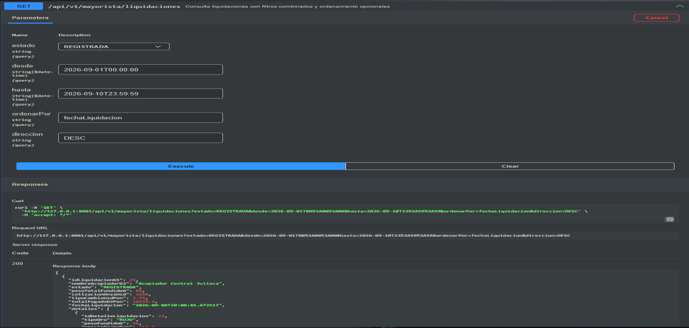

Consulta flexible
Combina estado, rango de fechas y ordenamiento dentro del mismo recurso.
El backend consulta liquidaciones persistidas, combina filtros y entrega un resumen preparado para consumo empresarial.
/api/v1/mayorista/liquidaciones/api/v1/mayorista/liquidaciones/resumenCombina estado, rango de fechas y ordenamiento dentro del mismo recurso.
Devuelve conteo, monto total y ticket promedio junto con un DTO ligero por liquidación.
CORS permite el origen configurado para la SPA y expone la API bajo /api/**.
